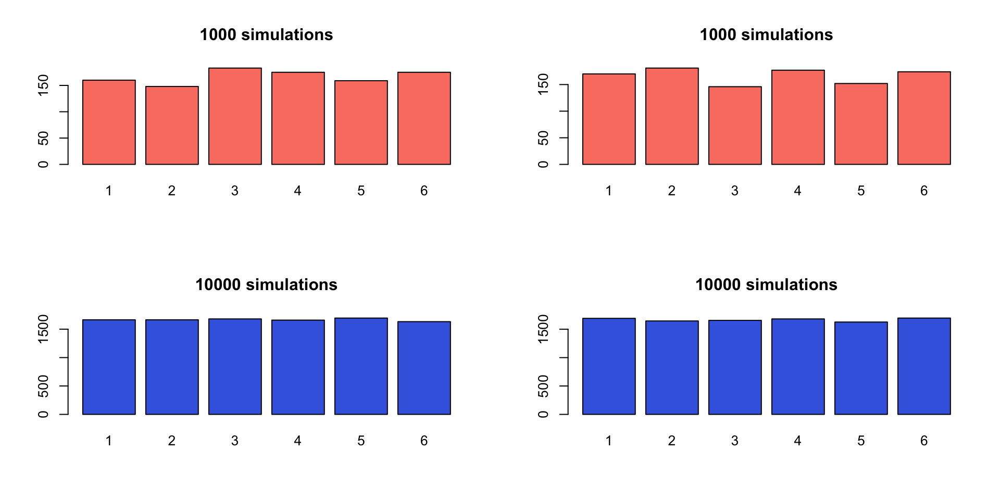

RStudio (Posit) is an integrated development environment (IDE) for R:
You can run it on your computer if you have already downloaded it (you need to download both R and RStudio).
Or use Posit Cloud; it runs RStudio in a browser and does not require downloading or installation.
To run code in the console, hit Enter. When writing code in an R script, hitting Enter moves to the next line but does not run the code.
To run code from an R script:
If you have highlighted code, hit Command + Enter (Mac) or Ctrl + Enter (Windows), or click Run.
If you do not have highlighted code, hit Command/Ctrl + Enter. R runs the line where your cursor is and moves to the next line.
Review
A random variable\(X\) is discrete if its range is countable (not necessarily finite). Example:
The distribution of a discrete random variable can be specified by a probability mass function (pmf):
Example: if \(X\) has range \(\{1, 2, \ldots\}\) with pmf
\[
f(x) = \frac{\exp(-x)x^{x-1}}{x!},
\]
then:
Show lecture notes
Examples of discrete random variables: \(X \in \{0,1,2\}\) is the number of heads in 2 coin tosses; \(Y \in \{1,2,3,\ldots\}\) is the number of tosses until the first head appears. The probability mass function (pmf) of a discrete random variable \(X\) is defined as \(f(x) = P(X=x)\). So, if the pmf is given by \[
f(x) = \frac{\exp(-x)x^{x-1}}{x!},
\] then, for example, \[P(X=1) = f(1) = \frac{\exp(-1)1^{1-1}}{1!} = \exp(-1) \approx 0.3679,\]\[P(X=2) = f(2) = \frac{\exp(-2)2^{2-1}}{2!} = \exp(-2) \approx 0.2707,\] etc.
Expectation
The expectation of a random variable \(X\), commonly denoted \(E(X)\), is calculated as
\[
E(X) = \sum_x x \cdot P(X=x)
\]
in the discrete case.
Suppose you play a game where you win 5 dollars with probability \(0.5\), win 10 dollars with probability \(0.3\), and lose 30 dollars with probability \(0.2\). How much money do you expect to win or lose?
Show lecture notes
The expected value is the probability-weighted average. Here, \(0.5(5) + 0.3(10) + 0.2(-30) = 0.50\), so the expected net gain is 50 cents per game.
We next introduce a few common discrete distributions, focusing on
the type of scenario that can be modeled by each distribution,
associated parameter(s) and how to calculate probabilities (in R),
simulating (i.e., drawing random observations) from the distribution.
Discrete uniform
Scenario:\(X\) can be any value on a finite set \(\{x_1, \ldots, x_k\}\), with equal probability.
Parameter:\(k\) is called a parameter, which is a constant that you need to specify when setting up a statistical model. \(k\) here represents the number of possible values \(X\) can take.
Pmf: For each value \(x_i\) in the sample space, \(f(x_i) = P(X=x_i) = 1/k\).
Probability and expectation: These are easy to calculate. For example, if \(X\) can be \(\{2,5,10\}\) with equal probability, then:
Simulating from a discrete uniform distribution:
sample(x =c(2, 5, 10), size =1000, replace =TRUE)
Show lecture notes
For \(X \in \{2,5,10\}\), each value has probability \(1/3\) and the expectation is \((2+5+10)/3=17/3 \approx 5.67\).
Fair die simulation
Exercise: Simulate the outcome of a fair die and plot the outcome as an estimate of the distribution.
Show code
# fair die examplepar(mfrow=c(2,2))plot(as.factor(sample(x =1:6, size =1000, replace =TRUE)), main ='1000 simulations', col ='salmon')plot(as.factor(sample(x =1:6, size =1000, replace =TRUE)), main ='1000 simulations', col ='salmon')plot(as.factor(sample(x =1:6, size =10000, replace =TRUE)), main ='10000 simulations', col ='royalblue')plot(as.factor(sample(x =1:6, size =10000, replace =TRUE)), main ='10000 simulations', col ='royalblue')

Show lecture notes
With many rolls, each face should occur close to one-sixth of the time. The simulated proportions will not be exactly equal because of random variation. The sampling variability of the estimated proportions generally decreases as the number of simulations increases.
Sampling from a finite set of numbers
In general, suppose we want to sample \(X \in \{1,2,3\}\) with probabilities \(\{0.1, 0.6, 0.3\}\).
A more universal approach only requires a uniform pseudo-random number generator, such as runif(1) in R (which draws a random number between 0 and 1).
Let \(a\) be a random number between 0 and 1; we can simulate \(X\) as follows:
Set \(X=1\) if \(0 < a \le 0.1\).
Set \(X=2\) if \(0.1 < a \le 0.7\).
Set \(X=3\) if \(0.7 < a < 1\).
Exercise: Sample 1000 values according to this distribution and calculate their mean. Your answer should be close to \(2.2\). Why?
Show lecture notes
The intervals have lengths 0.1, 0.6, and 0.3, so they produce probabilities 0.1, 0.6, and 0.3. The expected value is \(1(0.1)+2(0.6)+3(0.3)=2.2\), so a large simulated sample should have a mean near 2.2.
The binomial model counts successes across a fixed number of independent, identically distributed trials. Use dbinom for an exact probability like \(P(X=2)\), pbinom for a cumulative probability like \(P(X\le2)\), and rbinom to simulate counts.
Binomial examples
Flip a fair coin 10 times. The number of heads you get can be modeled by:
What is the probability of getting exactly 5 heads?
What is the probability of getting 6 or fewer heads?
What is the probability that 7 out of 10 people recover from a disease if the recovery probability is \(0.8\)? What are the assumptions of this model?
In a hospital of 15 newborn babies, what is the chance that 10 or more are boys, assuming the probability of a boy is \(0.5\)?
Show lecture notes
For a fair coin, the number of heads out of 10 flips, \(X\), can be modeled as \(X \sim \operatorname{Binomial}(n=10, p=0.5)\). \(P(X=5)\) is given by dbinom(5, size = 10, prob = 0.5) and \(P(X\le 6)\) is given by pbinom(6, size = 10, prob = 0.5), or, equivalently, sum(dbinom(0:6, size = 10, prob = 0.5)).
(Optional) Analytically, these probabilities can be obtained using the pmf. For example, \(P(X=5)={10 \choose 5}(0.5)^{10}=0.2461\).
\(X\) is the number of people (out of 10) who recover, so \(X\sim \operatorname{Binomial}(n=10, p=0.8)\). \(P(X=7)\) is given by dbinom(7, size = 10, prob = 0.8). Assumptions: (1) the recovery event should be independent from person to person; (2) each person should have the same success (recovery) probability \(p\).
The Poisson model is appropriate for counts in a fixed interval when events occur independently at a stable average rate. Similar to binomial functions in R, use dpois for an exact probability, ppois for a cumulative probability, and rpois to simulate counts.
Poisson examples
Suppose 20 customers arrive at an ice cream shop per hour on average on a Friday night. The number of customers arriving in the next 30 minutes can be modeled by:
What is the probability that exactly 6 customers arrive in the next 30 minutes?
Simulate 100 values from a Poisson distribution with \(\lambda=10\). What do these values represent in this scenario?
What are the assumptions of this model in this context? What assumptions might be violated?
Suppose spam emails arrive at a constant rate of 5 per day. What is the probability of getting 3 or fewer spam emails tomorrow? Comment on the assumptions.
Show lecture notes
For the ice cream shop, \(X\), the number of customers in the next 30 minutes can be modeled by \(X \sim \operatorname{Poisson}(\lambda=10)\). So \(P(X=6)\) is given by dpois(6, lambda = 10). (Optional) Analytically, \(P(X=6)=e^{-10}10^6/6! \approx 0.0631\).
To simulate 100 values from this distribution, use rpois(100, lambda = 10). The simulated values represent possible customer counts during simulated 30-minute periods.
The Poisson model assumes that (1) customers arrive independently from each other, which might be violated if people show up in groups, and (2) the average arrival rate is constant, which might be violated during a peak hour.
For spam emails, \(P(X \le 3)\) with \(\lambda=5\) is given by ppois(3, lambda = 5). For assumptions, we require spam emails to arrive independently and at a constant average rate.
Poisson and binomial
A binomial distribution can be approximated by a Poisson distribution when \(n\) is large and \(p\) is small.
Example: suppose an online advertisement has a 2% click rate. We are interested in the number of clicks, \(X\), among the next 1000 pop-ups.
What is the range of \(X\)?
What model(s) can we use for \(X\)?
Use R to verify that Binomial and Poisson model probabilities are similar for \(X=15,16,\ldots,25\).
Show lecture notes
The range of \(X\) is \(0, 1, \ldots, 1000\). The binomial model (exact) is \(X \sim \operatorname{Binomial}(1000,0.02)\). The Poisson model (approximate) is \(X \sim \operatorname{Poisson}(\lambda=np=20)\). Since \(n\) is large and \(p\) is small, their probabilities for values from 15 through 25 should be close.
# pois vs binomdbinom(15:25, prob =0.02, size =1000)dpois(15:25, lambda =20)
Geometric
Scenario:\(X\) is the number of failures before the first success, assuming independent trials with the same success probability.
R’s geometric distribution counts failures before the first success. Similar to other distributions, dgeom gives an exact probability, pgeom gives a cumulative probability, and rgeom simulates the counts of failures before the first success.
Geometric example
Suppose the probability is 0.2 that a person exposed to a contagious disease will catch it.
What is the probability that the fifth person exposed is the first to catch it?
Simulate 100 values from a geometric distribution with \(p=0.2\). What do these values represent in this context?
On average, how many people are expected to be exposed before the first person catches it?
What are the assumptions of this model? Comment on why the assumptions might be violated.
Show lecture notes
The fifth person means four failures followed by a success, so the probability is given by dgeom(4, prob = 0.2)=0.08192.
The simulated values, given by rgeom(100, prob = 0.2), are numbers of failures before the first infected person.
The expected number of failures is \(1/0.2-1=4\), so the expected number of people exposed through the first infection is 5.
The model assumes independent exposures with the same infection probability; behavior, immunity, and exposure conditions may violate these assumptions.
Negative binomial
Scenario:\(X\) is the number of failures before the \(k\)th success, assuming independent trials with the same success probability. The geometric distribution is the special case \(k=1\).
Note: R uses the number-of-failures parameterization. An alternative parameterization counts the number of trials instead.
Parameters:\(p=\) success probability, \(k=\) number of successes.
R’s negative binomial distribution counts failures before the \(k\)th success. The expected number of failures is \(k(1-p)/p\). The geometric distribution is the special case \(k=1\).
Negative binomial example
In the current NBA regular season, Devin Booker makes a field goal 45.6% of the time.1
What is the probability that it takes him exactly 5 tries to make 3 field goals?
What is the probability that it takes him 3 tries or fewer to make one field goal?
Simulate 100 values with \(p=0.456\) and size = 3. What do these values represent?
What are the assumptions of this model? Comment on why the assumptions might be violated.
Show lecture notes
Making 3 field goals in 5 tries means 2 failures before the third success: dnbinom(2, size = 3, prob = 0.456).
For one field goal, taking 3 tries or fewer means at most 2 failures: pnbinom(2, size = 1, prob = 0.456) or equivalently, pgeom(2, prob = 0.456).
The simulated values, given by rnbinom(1000, size = 3, prob = 0.456), are simulated numbers of missed field goals before Devin Booker makes his third field goal.
The model assumes a constant success probability and independent attempts; player condition, defense, shot selection, and game context may violate these assumptions.